At A Glance
Roles/Skills:
Tools:
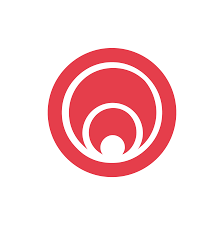
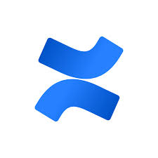


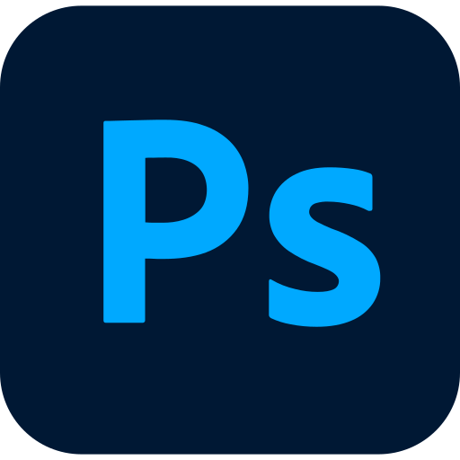
Contents
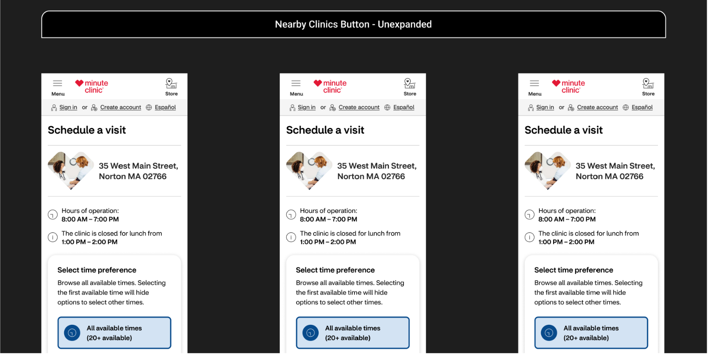
Introduction
With the introduction of the new CVS design system (Pulse), every page and flow within the MinuteClinic website had to be updated. One of these experiences was the Planner Page, or the scheduler that patients use in order to schedule a medical visit to MinuteClinic. I given responsibility over this page after joining the Scheduling team, and
Work
Challenge #1: Responsiveness and Multiple Viewports
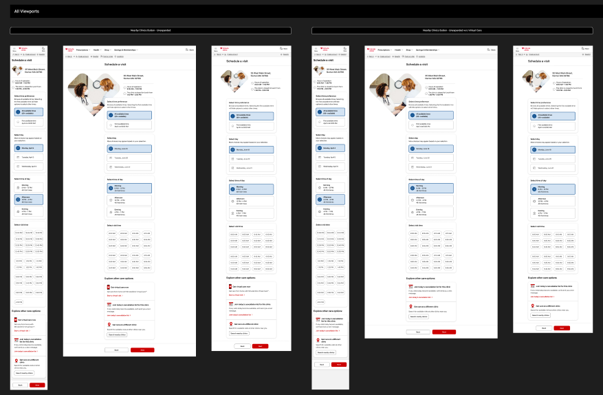
As a mobile-first company, CVS always strove to create the best experience for mobile users. So when designing the new planner page, we would first optimize the experience in our mobile viewports. That being said, we still had ~20-25% of our users schedule their visits using desktop and tablet viewports, and so we were responsible for considering these viewports as well.
In fact, every design project that we worked on had to have designs completed in mobile, desktop, and tablet viewports, and the updated planner page was no exception. This would also be an exercise in collaboration with our engineers, as we had to sure that the look and feel for each viewport that was pushed to production was exactly to specifications.
Challenge #2: Virtual Care Push
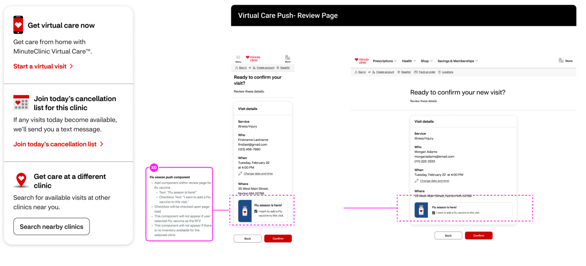
Shortly after the designs of the the new planner page were completed, CVS had a business goal of completing 500,000 virtual visits through MinuteClinic for 2023. As a result, we had to go to the drawing board to figure out where we can push virtual care visits throughout the MinuteClinic experiences. One of my observations of CVS was that they gave a high priority to efficiency. However, there was an opportunity for us to present virtual care as an option directly on the planner page. We designed tiles at the bottom of the planner page that gave the user additional options to find care, for situations where they could not schedule a visit for example.
Challenge #3: Future Considerations
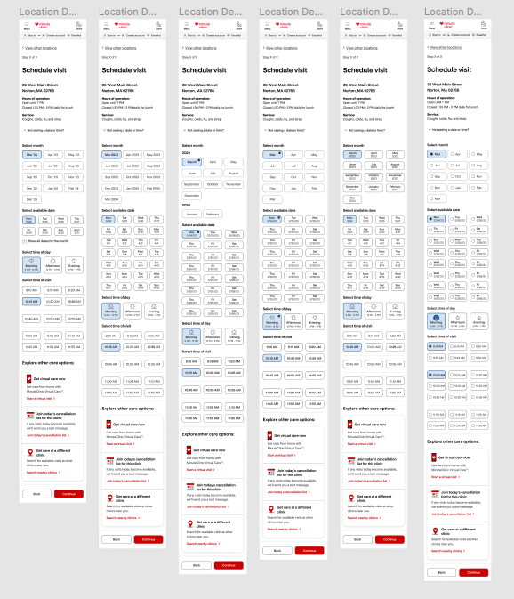
While we were developing the new planner page, one of the big considerations we made was of the future of the planner page, as we knew that the Unified designs would be coming into play soon. The Unified efforts were a big undertaking to unify all scheduling designs across all the CVS lines of business, which includes Pharmacy, Immunizations, MinuteClinic, and Behavioral Health. We collaborated with designers across multiple teams to create designs that would fit in line with the future vision of CVS.
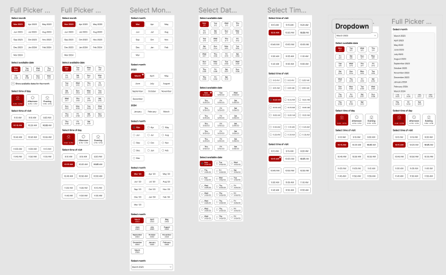
In addition to the Unified efforts that were taking place, one of the big asks was to create a scheduler that would allow users to schedule up to 365 days in advance. While this was runway work, it was important work that spanned across several disciplines. We made sure to communicate our expectations with Architecture to ensure that the designs we created would be feasible, and eventually created designs that were approved by product, engineering, and design leaders to ultimately create a 365 scheduler for our users.
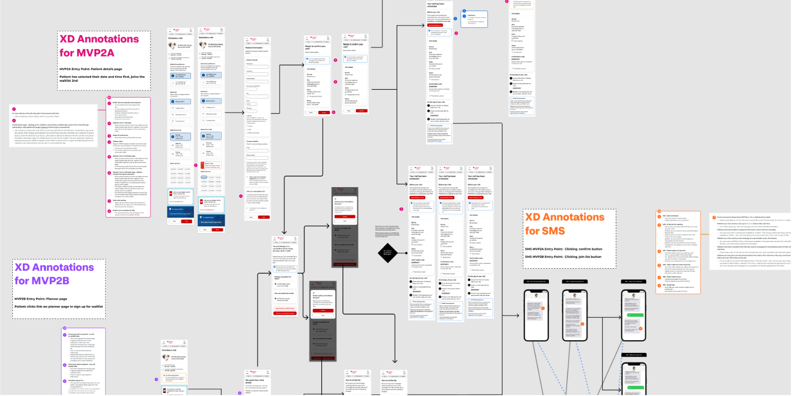
Introduction
One of the opportunities that CVS saw was for those who wanted to be seen for an appointment, but for various reasons, whether there were no appointments available, or no preferred appointments available, the user would be unable to schedule an appointment. In addition, CVS wanted to reduce the number of cancels that were occurring at MinuteClinic locations. I was involved in the completion of the Patient Waitlist, which was an effort to hit those two birds with one stone.
Work
Challenge #1: Finding Cracks in the Armor
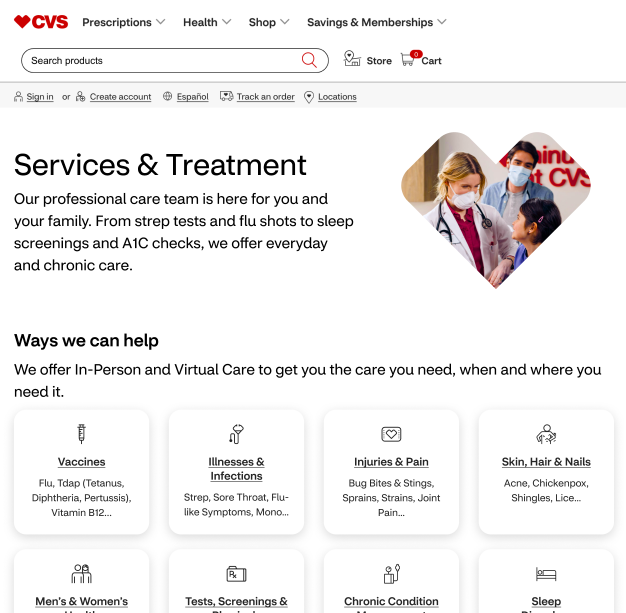
As previously discussed, CVS prioritizes efficiency throughout their business. And in order to create more revenue for their business, they have to do two things: increase the number of visits or decrease the number of visits that have been cancelled. The patient waitlist was an effort to reduce the amount of bad cancels.
Challenge #2: Entry Points and User Flows
One of the initial steps taken, after conducting our research and outlining the strategy and requirements for the feature, was to create user flows for the current experience. This would help us give an overview of the MinuteClinic flow and help us identify where we could best place the waitlist entry points. In addition, the flows served as a source of truth, and any updates to our designs would be reflected in our user flows as well.
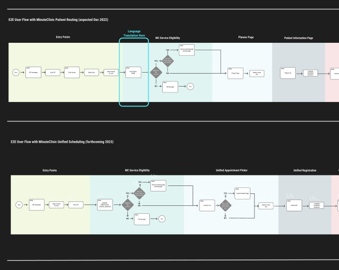
Eventually we discovered that we would best be able to add the option to join the Patient Waitlist in 2 points. The first was directly on the planner page, and would give the user the option to join the waitlist if for example they did not see any times available that they wanted (or if no times were available at all. The second entry point would be on the patient information page, where we implemented a checkbox for those who wanted to schedule an appointment but also wanted the peace of mind of finding an earlier appointment if one became available.
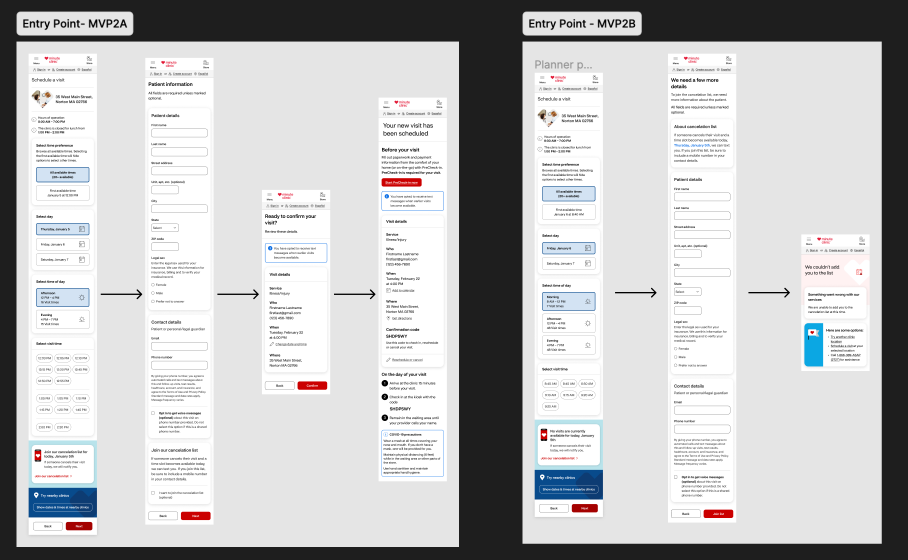
Challenge #3: Technical Difficulties + Urgency = Fun
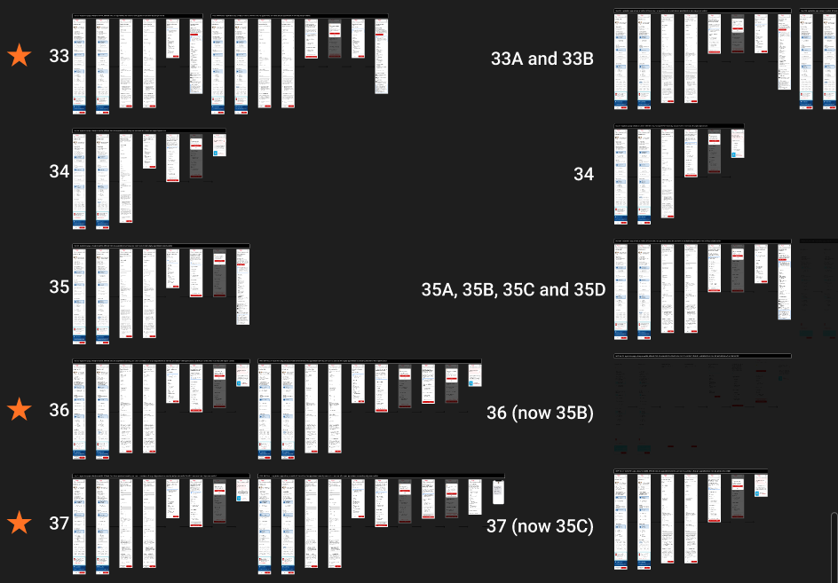
One of the challenges of working with a designer is learning how to collaborate with teammates of other disciplines- namely product, engineering, and architecture. As designs were being finalized, we were approached by the architecture lead that unfortunately they had discovered some technical limitations, and would be unable to deliver on assumptions we had made for the MVP release. The fun part? The release was slated for the end of the month.
In order to reach our deadline, we had to revisit much of the flow to redesign scenarios that previously we did not need to account for. We discovered 40 scenarios that would need to be taken into account, and we designed new screens, fallout pages, and components that were needed for these scenarios. We also organized each of these scenarios into specific user flows, which proved to be invaluable for the engineers as they were pushing the designs into production.
Ultimately, we were able to reach our deadline, and the patient waitlist was completed and release to great success, and was a big win for the team and the organization as a whole.